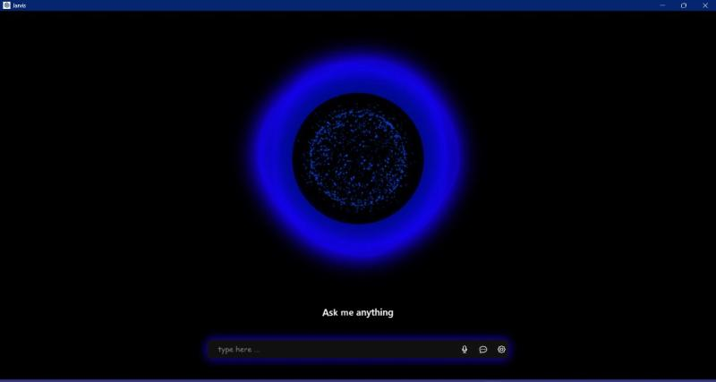
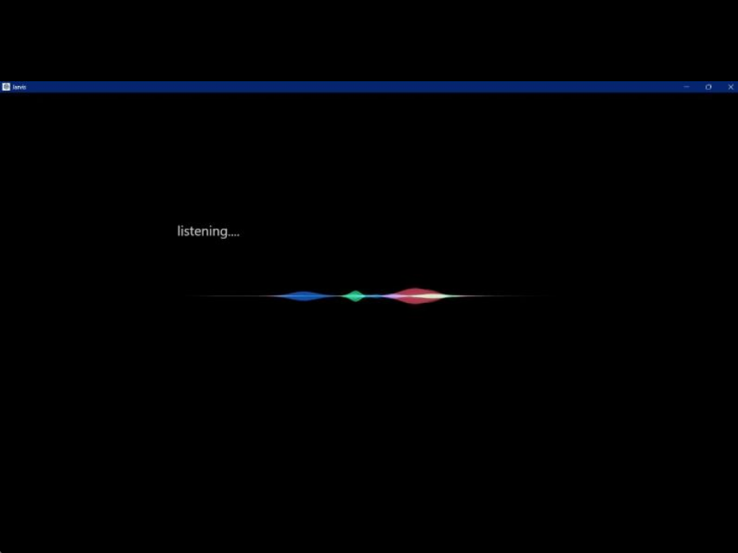

My Projects
Voice-Activated Desktop Assistant Using Python for Task Automation
This project involves the development of a voice-activated desktop assistant using Python, designed to perform tasks through voice commands. Utilizing libraries such as SpeechRecognition, pyttsx3, and PyAutoGUI, the assistant can execute various functions like opening applications, searching the web, setting reminders, and more. To enhance its visual appeal and interactivity, I have integrated JavaScript, HTML, CSS, and Bootstrap, making the interface attractive and animatic. The goal is to create an intuitive and efficient user experience, enhancing productivity and accessibility through seamless voice interaction.
 